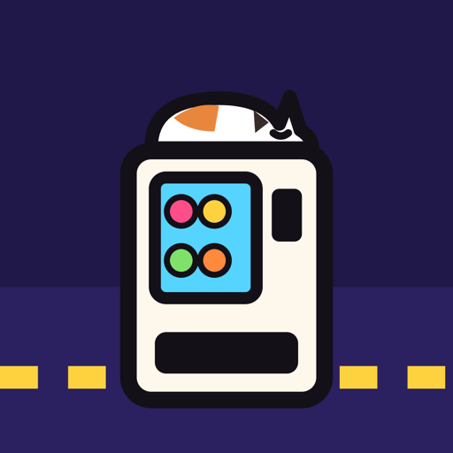

A LITTLE STREET OF VENDING MACHINES
Late at night,
the machines keep selling.
Nandemo Jihanki is a relaxed idle game about a back street of Japanese vending machines. Each machine has its own working insides you can watch; cats drop by; the street keeps selling while you are away.
The street
The street is home. Tap a machine to step up close. Machines sell on their own, one item at a time; a full machine lasts several hours. Restock all goes through every machine that needs it, one after another. The wallet shows what the street has taken in and what comes next.
Up close
Tap the machine to call customers, or hold to keep calling them. Drag sideways to turn the machine. X-ray shows the mechanism inside and what each slot holds. Tap the lock to open the door and restock by hand; Lineup chooses what the machine sells, or leaves it to the wholesaler.
While you are away
The street goes on selling in real time until the shelves and the warehouse are empty. When you come back, a receipt shows what was sold. If you allow notifications, the game can tell you when the whole street has sold out; at night it waits until 8:00.
Cats
Cats come and go through the day. Feeding one is a gift, never required; a full cat brings a few more customers to the machine it sits on.
Purchases
There is no virtual currency, no advertising and nothing random for sale. A few optional items can be bought with real money, once, and are kept for good. Restore purchases is in Settings and at the bottom of the shop; purchases are shared with your Family Sharing group.
Widgets
A small widget shows the cat on the street right now and how long the shelves will last; a medium widget shows the whole street. Widgets read a plan the game writes down as you leave, so they can differ from the real result by a few minutes.
Devices and saving
Nandemo Jihanki runs on iPhone with iOS 17 or later. Your street is saved on the device and, when the device is signed in to iCloud, synced to your other devices through your own iCloud; if two devices disagree, the one that has taken more wins. Settings has language (Chinese, English, Japanese), sound, vibration and a battery-saving mode.
Contact
For a problem, include the device model, system version, app version and what you were doing. Please do not send passwords or payment information.
Support information prepared for version 1.0 · Updated 19 October 2026.